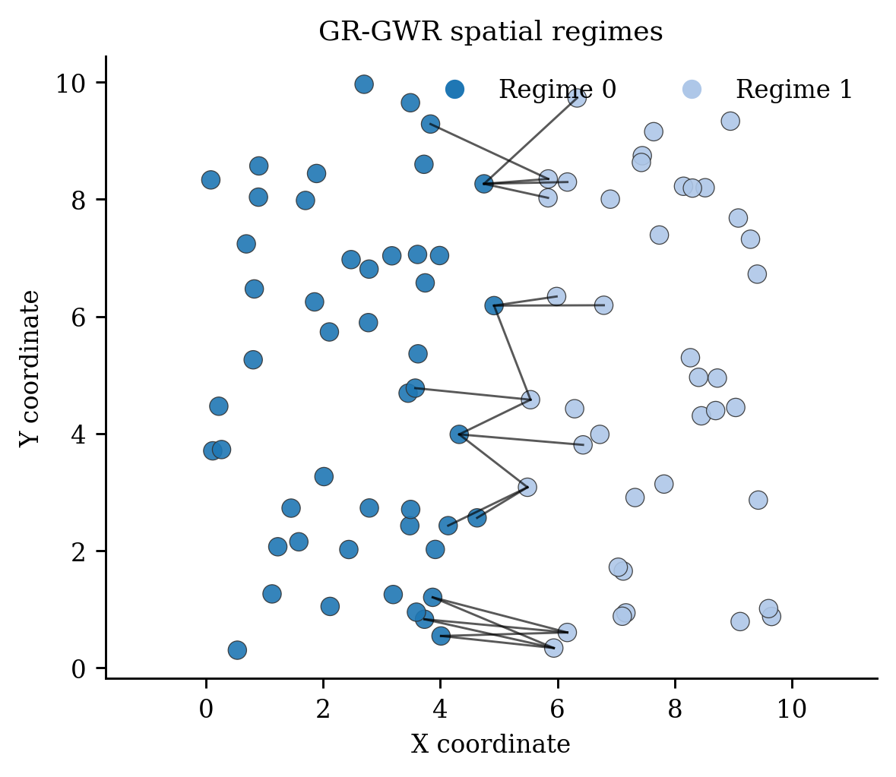
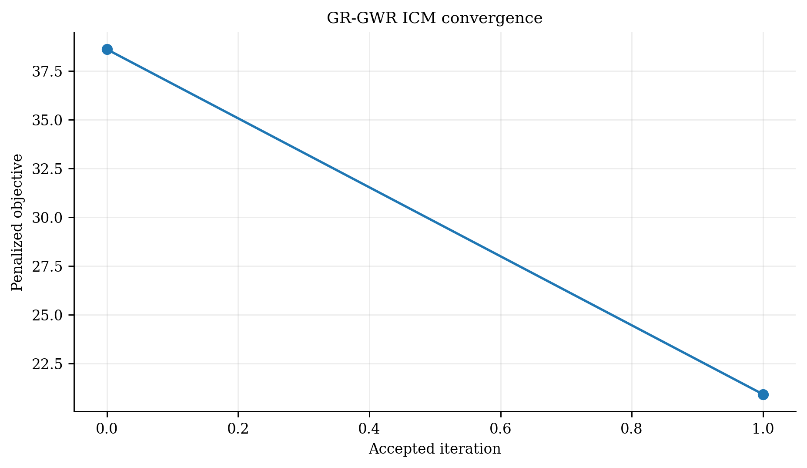
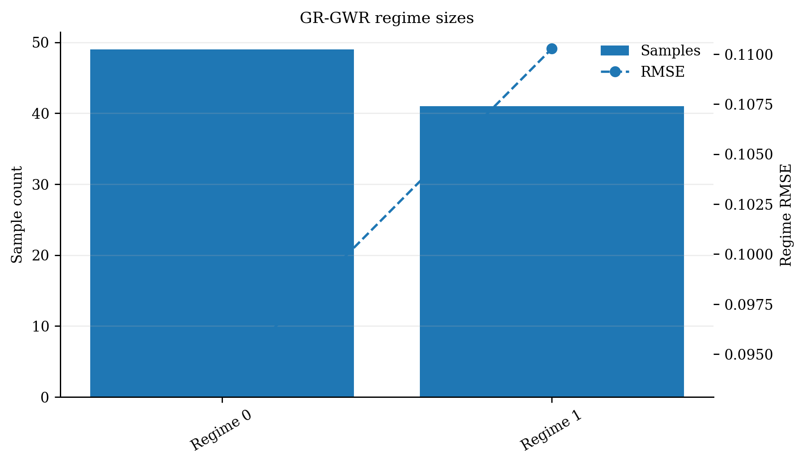
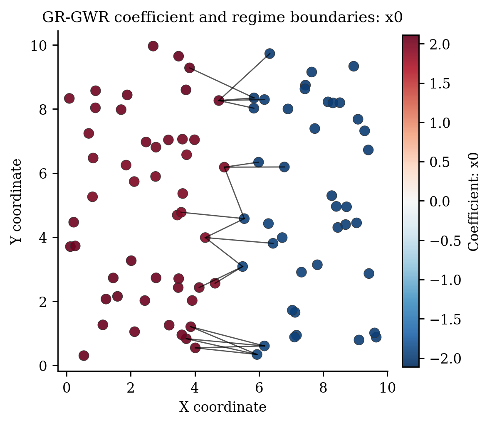

GR-GWR 完整算法专论：当空间关系不是渐变，而是在边界处“换了一套规则”¶
模型名称： Geo-Regime Geographically Weighted Regression 中文名： 地理机制分区加权回归 性质： pyGWRx 原创研究模型；当前实现经过连通性、目标单调、标签完整性、预测重标定和条件诊断测试，但机制发现仍属于非凸、数据驱动的探索方法。
序章：一条边界能让同一个变量换符号吗¶
设想一条河把城市分成两侧。河东的轨道交通和高密度就业使收入增长伴随住房价格迅速上升；河西受工业转型和土地供给影响，同样的收入变量作用更弱。或者一条断层把地质过程分为两套机制；一条政策边界让企业补贴只在区内生效。
普通 GWR 会用连续核把边界两侧的样本混合。它擅长画“坡”，却不擅长画“悬崖”。带宽越大，悬崖越被抹平；带宽越小，模型可能用大量自由度模拟突变，却产生噪声系数面。
GR-GWR 的故事是：先让 GWR告诉我们局部关系大致是什么，再从局部关系中寻找空间连续的“机制区”；随后在每个机制区内部保留 GWR 的平滑能力，但禁止跨机制借样本。边界不再是人为给定的行政线，而是由局部关系、空间连续性和边界复杂度共同发现。
1. 分段平滑的系数场¶
标准 GWR 假定 \(\beta(s)\) 在空间上由核平滑。GR-GWR 引入离散标签
对于属于机制 \(r\) 的位置，系数面 \(\beta^{(r)}(s)\) 在区内局部平滑；不同机制之间不要求连续：
这是一种**分段平滑（piecewise smooth）**假设，而非分段常数。它区别于简单“每区一套 OLS”：区内仍可随位置变化；也区别于 GWR：跨区不共享核信息。
2. 总目标：拟合误差与边界复杂度的交易¶
在统一无向空间图 \(G=(V,E)\) 上定义边界数
目标为
- 第一项希望每个点进入能最好解释它的机制；
- 第二项惩罚锯齿状、碎片化边界；
- \(\lambda=0\) 时分区可能追逐局部噪声；
- \(\lambda\) 大时机制区更紧凑，极端情况下趋向单一区域。
当前实现中的 \(E\) 是唯一无向边集合，避免旧实现中把有向 kNN 边简单除以 2 所造成的不一致。
3. 第一步：让 GWR 提供“关系指纹”¶
先对全体样本拟合标准 GWR，得到每个位置的系数向量
这些系数不是最终答案，而是每个位置的“局部关系指纹”。机制发现使用**斜率**而不使用截距：
原因是近似常数的截距在标准化后，其微小噪声会被放大到单位方差，反而与真正有信息的斜率同等影响聚类。排除截距不是形式细节，而是模型成功恢复机制区的关键经验发现。
4. 空间约束聚类特征¶
对斜率按列标准化为 \(\widetilde\beta_i\)，坐标 min–max 或标准化为 \(\widetilde s_i\)。构造
平方根权重使欧氏距离的平方自然分解为
因此：
- \(\gamma=0\)：只按局部关系相似性；
- \(\gamma=1\)：只按空间；
- 中间值：平衡机制相似与位置接近。
这修正了旧原型中仅把坐标乘以 \(\gamma\)、但无法使 \(\gamma=1\) 真正成为纯空间聚类的问题。
5. 统一图、MST 与连通 Ward 初始化¶
仅用 KMeans 无法保证每个簇空间连通。当前实现先建立对称 kNN 图，并加入最小生成树边，确保全图连通。随后在该 connectivity 约束下使用 Ward 聚类。
Ward 合并最小化簇内平方和增加：
但只允许图上相邻的簇合并。这样初始机制区既依据关系指纹，也具有空间连续性。
MST 的作用不是强迫最终边界沿树，而是防止 kNN 图因稀疏或孤立而断开，使连通约束聚类可得到完整分区。
6. 区内 GWR：不是每区一个常数¶
给定标签 \(z\)，对机制 \(r\) 的样本集合
在位置 \(i\in\mathcal R_r\) 只使用本区样本：
因此系数在区内仍由距离核平滑。帽子矩阵第 \(i\) 行只在同区样本列上非零：
这一结构同时表达“区内借力、区外断开”。
7. ICM 精化：逐点问“换区是否值得”¶
对节点 \(i\)，候选机制只包括当前机制与邻居标签。候选机制 \(r\) 的预测不是复制最近成员系数，而是用**当前标签**下属于 \(r\) 的样本，在焦点 \(i\) 重新执行留一局部 WLS：
候选代价：
按确定性随机顺序逐点更新，且只有
才移动。使用最新标签的顺序 ICM 比同步更新更符合条件极小化逻辑。
8. 连通性和最小机制规模守卫¶
移动节点前检查：
- 源机制移除节点后样本数不低于
min_regime_size； - 若
enforce_connectivity=True，源机制剩余子图仍连通； - 候选机制拥有足够样本估计局部设计参数；
- 一轮后重新完整拟合，若总目标上升，则拒绝该轮。
这解决了旧原型可能出现的空标签、标签跳号、机制区分裂、局部系统不可估和 ICM 目标上升问题。
9. 目标守卫与收敛¶
每轮 ICM 后对新标签完整重拟合，计算
若
停止并保留旧状态。停止原因包括：标签稳定、目标改善低于阈值、目标守卫触发或达到最大轮数。objective_history_ 和 stop_reason_ 均被保存。


10. 标签重编码与机制完整性¶
每轮或最终状态将实际标签重编码为
并重新排序系数块。输出包括：
n_regimes_actual_；regime_sizes_；regime_component_counts_；regime_boundaries_；- 每区系数和逐点系数。
这避免“声明 5 个机制、实际只剩标签 2、3、4”的不一致。
11. 条件 AICc 与条件 ENP¶
在最终标签已知条件下，区内帽子矩阵可给出
并计算常规 Gaussian AICc。必须称为**条件诊断**，因为它没有完整计入：
- 搜索机制数 \(K\)；
- 聚类和 ICM 的离散标签选择；
- 图结构和边界搜索；
- \(\gamma\)、\(\lambda\) 的试验。
因此 conditional_aicc 可用于相同搜索协议下的相对比较，但不能被描述为自动惩罚全部机制发现复杂度的标准 AICc。
12. 新位置预测¶
对新坐标 \(s_*\)，当前实现先根据空间邻域分配机制 \(r_*\)，再用该机制的训练样本在新位置重新形成权重并求解：
这比“复制最近训练点系数”更符合 GWR 的预测定义。
13. 创新点的完整叙事¶
- 把空间非平稳从连续曲面扩展为分段平滑曲面。 允许真实边界上的系数跳变。
- 由局部关系本身发现机制。 不是按原始 X 或行政区直接分组，而是从 GWR 斜率指纹出发。
- 明确排除截距噪声。 提出了局部斜率才是机制识别信息载体这一实践原则。
- 关系相似与空间连续统一。 \(\gamma\) 凸几何、连通 Ward、对称图和 MST 共同形成空间约束初始化。
- 区内仍保持 GWR。 不是粗糙的区域固定系数，而是“区内平滑、区间突变”。
- 候选迁移用直接局部重标定。 避免最近系数代理造成目标与算法定义不一致。
- 顺序 ICM + 连通守卫 + 总目标守卫。 使每轮状态可解释、标签完整且目标不增。
- 诚实的条件诊断。 明确区分已知标签下的平滑复杂度和发现标签的额外复杂度。
14. 参数如何塑造故事¶
14.1 机制数 \(K\)¶
过小会合并不同机制；过大会把噪声变成边界。可以通过空间分块 CV、条件 AICc 小网格、稳定性和外部知识共同决定。
14.2 边界惩罚 \(\lambda\)¶
控制拟合与简洁边界的交易。应绘制 \(\lambda\)—边界数—CV 误差曲线，而非只报告一个值。
14.3 空间权重 \(\gamma\)¶
决定初始分区更相信关系指纹还是地理连续；最终 ICM 仍受边界惩罚约束。
14.4 图近邻数¶
太小容易形成狭窄通道和不稳定连通，太大可能过度限制复杂边界。应做敏感性分析。
14.5 区内 GWR 带宽¶
过大使区内近似固定系数，过小使区内过拟合；它与机制数存在替代关系。


15. 如何验证“发现的是机制而不是漂亮分区”¶
- 合成数据：已知边界和系数真值，检验标签恢复、系数 RMSE、边界 Hausdorff/一致率；
- 稳定性：重采样、坐标扰动、带宽、\(K\)、\(\lambda\)、\(\gamma\) 敏感性；
- 外部证据：与地质、政策、市场或功能区比较，但不能要求完全一致；
- 预测：空间分块 CV，避免邻近泄漏；
- 简约性：条件 AICc 仅作为一部分，还需报告区数、边界数和标签搜索方案；
- 对照：OLS、GWR、MGWR、MixedGWR、预定义分区回归。
Columbus 案例中，新严格实现的机制与简单 EW 指示一致率约接近随机基准，因此不能把该变量当作机制真值；这恰好说明数据驱动关系边界不必等于行政边界，也说明外部验证必须克制。
16. 局限与后续研究¶
- ICM 是局部搜索，不保证全局最优；可研究图割、alpha-expansion、模拟退火或贝叶斯采样；
- 机制数选择仍是离散难题；可引入 MDL、稳定选择或非参数先验；
- 现有图基于点邻接；面数据可使用 queen/rook 邻接；
- 条件 AICc 未计入标签选择，可研究有效自由度或选择后推断；
- 边界惩罚当前等权，可扩展为道路、河流、地形或行政边界先验；
- 可让不同机制拥有独立带宽、核和变量集合；
- 需要更多具有可信外部机制结构的真实数据案例。
17. 与相关模型的边界¶
- GWR： 单一连续系数面；GR-GWR 是分段连续。
- MixedGWR： 变量维度上划分全局/局部；GR-GWR 是空间位置上划分机制。
- 区域 OLS： 区内固定系数；GR-GWR 区内仍局部变化。
- 空间约束聚类： 只发现区域；GR-GWR 的区域由局部回归关系驱动并与预测联合。
- 贝叶斯聚类 GWR： 用概率模型联合估计；GR-GWR 是确定性、可直接检查的聚类—ICM框架。
18. 主要参考¶
19. 当前主要参数及其研究含义¶
| 参数 | 含义 | 主要作用 | 风险与报告要求 |
|---|---|---|---|
n_regimes |
初始机制数 \(K\) | 控制分段复杂度 | 报告候选集与稳定性 |
bandwidth |
初始与区内 GWR 带宽 | 控制关系指纹和区内平滑 | 与 \(K\) 存在替代关系 |
kernel |
区内距离核 | 控制区内借样本方式 | 建议做核敏感性 |
lambda_boundary |
边界惩罚 \(\lambda\) | 控制边界长度/碎片化 | 报告边界数与 CV 曲线 |
spatial_constraint_weight |
\(\gamma\) | 平衡系数相似与空间接近 | 0/1 端点语义需明确 |
n_neighbors |
邻接图近邻数 | 决定允许的边界和连通检查 | 太小易断裂，太大过强约束 |
min_regime_size |
最小机制样本量 | 保证局部 WLS 可估 | 至少大于设计参数数目 |
enforce_connectivity |
连通性约束 | 防止飞地和分裂机制 | 面数据未来可换 queen/rook 图 |
max_iter、tol |
ICM 预算与接受阈值 | 控制收敛 | 报告停止原因和目标历史 |
random_state |
更新顺序/初始化可复现 | 影响局部最优 | 应做多种种子稳定性 |
20. 完整伪代码¶
Input: X, y, coordinates S, K, bandwidth h, graph size k,
boundary penalty lambda, spatial weight gamma
1. Fit global GWR on all observations
2. Extract local slope coefficients (exclude intercept)
3. Standardize slope coefficients and coordinates
4. F_i <- [sqrt(1-gamma)*slope_i, sqrt(gamma)*coord_i]
5. Build symmetric kNN graph; add MST edges for global connectivity
6. Run connectivity-constrained Ward clustering to obtain labels z
7. Merge/repair undersized regimes and relabel to 0..K_actual-1
8. Fit within-regime GWR; compute objective RSS + lambda*boundary_count
9. Repeat:
visit nodes in deterministic seeded order
for each node i:
candidate labels <- current label + neighbor labels
reject moves that break source connectivity/minimum size
for each candidate r:
recalibrate leave-one-out local WLS at i using current members of r
cost <- squared prediction error + lambda*neighbor disagreement
accept strictly lower-cost candidate
refit all within-regime GWRs
if full objective rises: reject sweep and stop
if labels stable or improvement < tol: stop
10. Relabel, refit, store regimes, boundaries, coefficients and hat matrix
11. Compute conditional ENP/AICc
21. 计算复杂度¶
初始 GWR 通常需要 \(O(n^2)\) 距离/权重计算。每次区内完整拟合的成本取决于机制规模 \(n_r\)：
ICM 候选代价在当前实现中会重新做局部 WLS。若每点候选数近似为常数、每个候选机制平均规模为 \(\bar n_r\)，单轮约为
因此模型适合中小样本的方法研究；超大样本可通过缓存局部充分统计量、限制候选边界节点或多尺度预聚类加速。
22. 当前源码输出¶
regimes_：连续编码的逐点机制标签；n_regimes_actual_：最终实际机制数；regime_sizes_：各机制样本量；regime_component_counts_：连通分量数，严格模式应全为 1；regime_boundaries_：唯一无向跨机制边；global_coef_：初始 GWR 局部关系指纹；clustering_features_：斜率—坐标联合特征；local_parameters_、coefficients_、fitted_values_；hat_matrix_与diagnostics_['conditional_aicc']；objective_history_、converged_、stop_reason_；selection_history_：显式调用参数选择时的候选结果。
23. 当前验证证据¶
23.1 专项测试¶
当前专用测试为 25 passed，覆盖：已知尖锐机制恢复率、标签连续和无空区、每区连通、无向边界计数、候选代价与手工局部 WLS 一致、目标单调不增、训练点重新标定、预测和参数搜索。
23.2 已知真值仿真¶
| 模型 | 机制恢复率 | \(R^2\) | AICc | ENP |
|---|---|---|---|---|
| GR-GWR | 0.990 | 0.995 | -289.24（条件） | 47.83（条件） |
| GWR | — | 0.946 | 205.92 | 50.09 |
在该构造的尖锐边界数据中，分段平滑表示比统一平滑 GWR 更符合数据生成过程。条件 AICc 仅比较最终平滑器，不包含标签搜索全部自由度。
23.3 Columbus 案例¶
| 模型 | \(R^2\) | AICc | ENP |
|---|---|---|---|
| GR-GWR | 0.912 | 331.82（条件） | 12.08（条件） |
| GWR | 0.796 | 379.52 | 13.71 |
新版机制区与简单 EW 指示的一致率为 0.531，不能作为强外部验证。这里最诚实的解释是：GR-GWR 找到了一种能改善拟合的关系分区，但其社会地理含义仍需独立证据。
24. 参数选择策略¶
当前 select_parameters() 支持两种小网格准则：
conditional_aicc：速度较快，但条件于每个候选发现的标签；spatial_cv：按坐标聚类形成空间块，更适合预测选择但计算更大。
推荐分层策略：先固定合理带宽搜索 \(K,\gamma\)；再固定结构搜索 \(\lambda\)；最后在小邻域内联合微调。不要在巨大网格上挑出最低样本内条件 AICc 后宣称发现真实机制。
25. 最小代码示例¶
from pygwrx import GRGWR
model = GRGWR(
n_regimes=3,
bandwidth=30,
lambda_boundary=1.0,
spatial_constraint_weight=0.5,
n_neighbors=8,
enforce_connectivity=True,
random_state=42,
)
model.fit(X, y, coords)
regimes = model.regimes_
pred = model.predict_result(X_new, coords_new)
print(model.diagnostics_["conditional_aicc"])
26. 一段适合论文引言的“创新故事”¶
标准 GWR 假设局部关系像地形坡面一样连续变化，但真实地理过程常被行政、地质、市场或政策边界切分。GR-GWR 将系数场改写为“区内平滑、区间突变”的分段结构。模型先从 GWR 斜率中提取每个位置的关系指纹，再在统一空间图上发现连通机制区，并用带边界惩罚的顺序 ICM 迭代精化。每次候选迁移都在目标位置重新标定局部模型，而非复制已有系数；连通性、最小样本和总目标守卫使分区保持可估、连续且不增目标。其核心创新不是为地图强加预定义区域，而是让局部关系自己揭示可能的过程边界，同时保留区域内部的 GWR 平滑性。